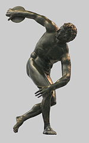
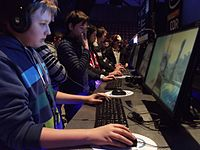

|

Roman bronze reduction of Myron's Discobolos, 2nd century AD. |
Artifacts and structures suggest sport in China as early as 2000 BC. Gymnastics appears to have been popular in China's ancient past. Monuments to the Pharaohs indicate that a number of sports, including swimming and fishing, were well-developed and regulated several thousands of years ago in ancient Egypt. Other Egyptian sports included javelin throwing, high jump, and wrestling. Ancient Persian sports such as the traditional Iranian martial art of Zourkhaneh had a close connection to warfare skills.[17] Among other sports that originated in ancient Persia are polo and jousting. A wide range of sports were already established by the time of Ancient Greece and the military culture and the development of sport in Greece influenced one another considerably. Sport became such a prominent part of their culture that the Greeks created the Olympic Games, which in ancient times were held every four years in a small village in the Peloponnesus called Olympia. |
Sports have been increasingly organised and regulated from the time of the ancient Olympics up to the present century. Industrialisation has brought increased leisure time, letting people attend and follow spectator sports and participate in athletic activities . These trends continued with the advent of mass media and global communication. Professionalism became prevalent, further adding to the increase in sport's popularity, as sports fans followed the exploits of professional athletes – all while enjoying the exercise and competition associated with amateur participation in sports. Since the turn of the 21st century, there has been increasing debate about whether transgender sportspersons should be able to participate in sport events that conform with their post-transition gender identity. |

Electronic sports are a recent development.
Motorised sports have appeared since the advent of the modern age. |